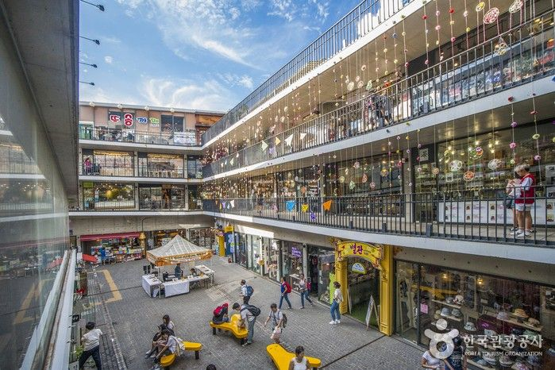
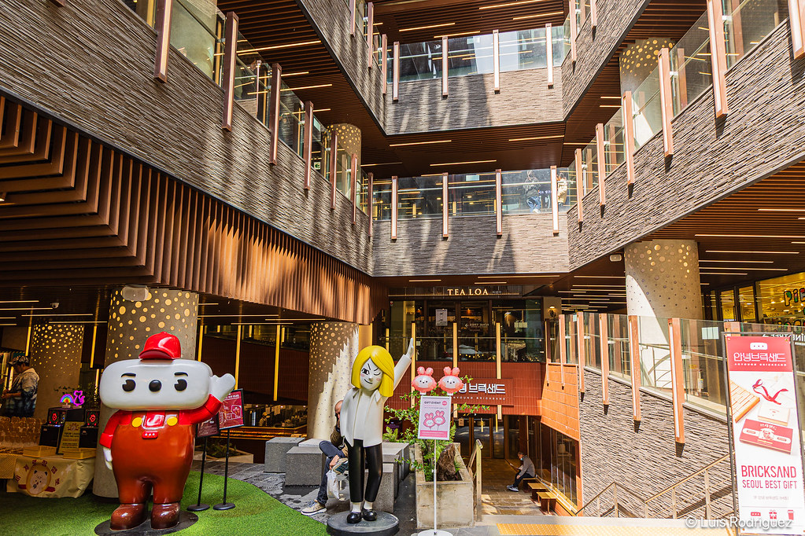
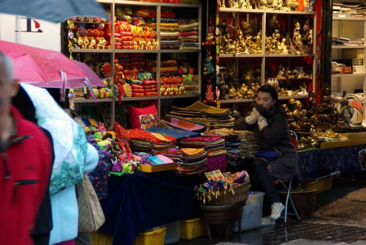
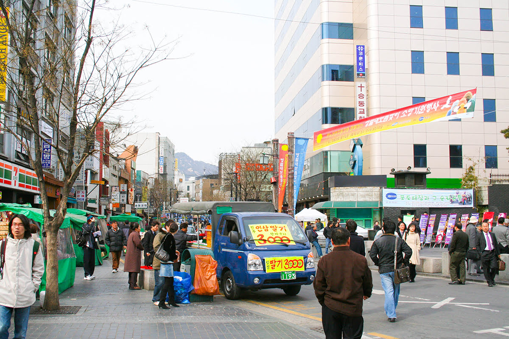
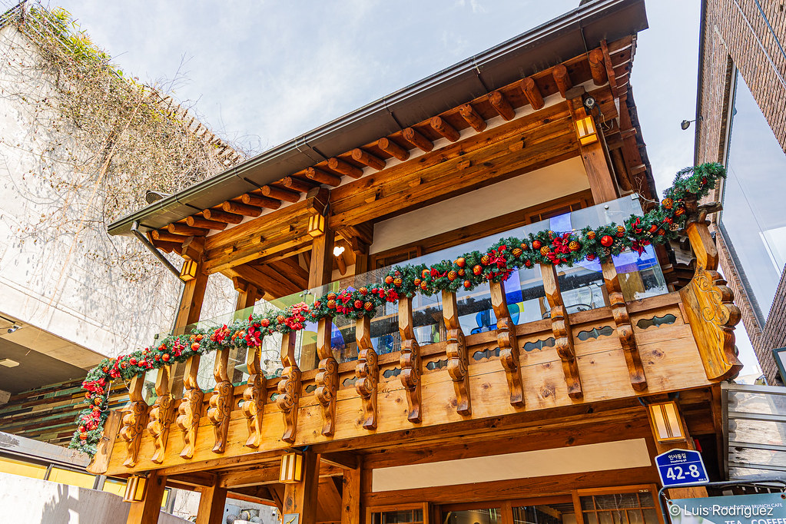
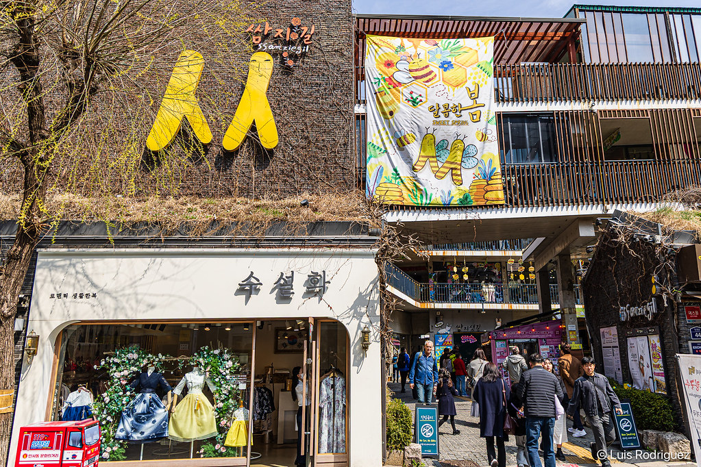

Barrio Insandong

El barrio de Insa-dong, situado en el corazón de la ciudad, es un lugar importante donde se intercambian artículos antiguos, pero valiosos. En la zona de Insa-dong hay una calle principal con un laberinto de callejuelas que se despliegan a cada lado. En aquellas callejuelas hay galerías, restaurantes tradicionales, casas de té tradicional y cafés. Las tiendas en Insa-dong son muy populares entre los grupos de todas las edades gracias al ambiente singular y único que ofrece cada una de ellas
Las galerías de arte son el mismísimo latir del corazón de Insa-dong. En él hay un centenar de galerías donde se pueden contemplar todo tipo de ejemplares de las bellas artes de Corea, desde pinturas hasta esculturas. Entre las galerías de arte más famosas se encuentran la Galería Hakgojae, que funciona como el centro de arte folclórico; la Galería Gana, que promueve a muchos artistas de talentos prometedores, y el Centro de Arte Gana.
ambién se desarrollan interpretaciones de obras tradicionales y exhibiciones. Insa-dong es especialmente popular entre los turistas extranjeros, pues aquí pueden ver y vivir directamente la experiencia de la cultura tradicional coreana, y también porque pueden adquirir piezas de bellas artes. En la calle podrá probar melcochas coreanas y el tradicional pajeon (tortilla coreana), y ver a numerosos extranjeros sumidos en las alegres festividades.
Mas imagenes sobre el Barrio Insandong





